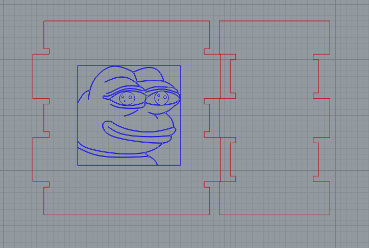

A4: Subtractive Manufacturing
This assignment asked us to create a box in one of two ways: (1) CNC milling or (2) 3D printing. I chose the former option because I wanted to try out a different method. Therefore, for my overall process, I first built my design on Rhino, set up my DXF on KiCAD, imported my Gerber files to Bantam Tools, and then went to the Mill to cut.
To begin, I started laying out my pieces on Rhino. I measured the RF1 copper board and found that it was 10cm x 7cm. Thus, I created a rectangle of that size for reference on Rhino. Then, I used the polyline segments tool to create the outlines, which will be connected with finger edge joints that have dogbones.
Afterwards, I worked on the engraving that would go on my pieces. I decided on Pepe because I was feeling down this week (like Pepe). I first found a line drawing of Pepe and then used the Vectorize plug-in to transform the image into a curve. I scaled the image down to 50% and then placed it on top of my big piece.

Following the instructions on the class slides, I separated the cutting and engraving paths, exported them as DXF files, and then set them up on KiCAD. On KiCAD, I checked that the designs matched my Rhino files, and then I plotted my designs as Gerber files. Afterwards, I went to the Mill to cut. I imported and configured my files onto Bantam Tools and used these measurements: Trace Depth: 0.15 mm; Zoffset = 1.55 mm.


When I started printing, however, I experienced failure twice because the copper boards kept flying out of its position. Therefore, to resolve this, I made sure to cover the entire backside with tape and also reduced the Feed Rate and Spindle Rate to 80%. Furthermore, I experience a problem with the homing of the spindle--the position of the spindle did not match the preview on Bantam Tools. Nevertheless, I continued the print as a test run.

The print was good; however, the spindle broke. Thus, I changed the spindle and prepared for the cut that includes the edges. After printing, I realized the spindle may have been thicker than my original spindle, which is the reason why so much of Pepe was shaved off. I also realized that my pieces did not fit.

As a result, I went back to Rhino and redid the design. I made sure that the width of the insertion slots were precisely matching.
I went back to the Mill to cut my parts while anticipating this version would work. However, eventhough the parts lined up on Rhino, the pieces that I cut did not line up. The reason could be that the spindle that I used was too thick or that my setting was off. Thus, I plan to print again with a different setting or spindle.


This is my final outcome! Do you see Pepe?


Pepe:
Link to my Rhino file
Link to my KiCAD file
Credit
Thank you to Junchao's presentation and help during office hours. Also, credit to the developers of Vectorize for making tracings of images easier on Rhino.